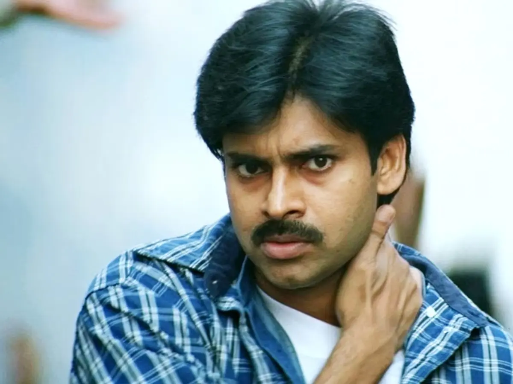

Konidela Kalyan Babu, known worldwide as Pawan Kalyan, was born on September 2, 1971, in Bapatla, Andhra Pradesh, India. He is the younger brother of legendary actor Chiranjeevi and one of the most beloved stars in Telugu cinema.
Dubbed "Power Star" by fans, Pawan Kalyan has an unmatched mass following across Telugu-speaking states and beyond. His dialogue delivery, screen presence, and action sequences have become benchmarks in Indian cinema.
Beyond films, Pawan Kalyan is the founder of the Jana Sena Party and currently serves as the Deputy Chief Minister of Andhra Pradesh, dedicating himself to social causes and political change.
Films
Years Career
Jana Sena Founded
Dy. CM of AP

Made his acting debut with Akkada Ammayi Ikkada Abbayi, catching audiences' attention with his charming screen presence.
Kushi became a massive hit, cementing Pawan's status as a top star. His chemistry with Bhumika Chawla was adored by fans.
His dubbed version of Pokiri became a phenomenon. Jalsa (2008) followed as another chart-topper.
Turned director with Thammudu-era concepts, and officially helmed Panjaa-style action dramas, showing his versatility.
Founded the Jana Sena Party to work towards political transparency and social justice for the people of Andhra Pradesh and Telangana.
Starred in the blockbuster Bheemla Nayak alongside Rana Daggubati, receiving critical acclaim and massive box office success.
Following NDA's landslide victory in Andhra Pradesh elections, Pawan Kalyan was sworn in as the Deputy Chief Minister of Andhra Pradesh.
Debut film — romantic drama that introduced the world to Pawan Kalyan.
Read More →Award-winning romantic classic. Devi Sri Prasad's debut — soundtrack remains iconic.
Award Winner Read More →Mass blockbuster that cemented PK's action hero status with 100+ day run.
Read More →Iconic romantic comedy. Chartbuster soundtrack by Mani Sharma remains timeless.
Read More →Mass entertainer that showcased PK's full range of action and comedy.
Read More →Romantic thriller that broke several box office records and has a cult following.
Cult Classic Read More →Massive blockbuster with Trivikram's dialogues and DSP's electrifying music.
Blockbuster Read More →Highest-grossing Telugu film of its time. Pure family entertainer with a record run.
Read More →Action comedy that PK also wrote, showcasing his creative depth.
Wrote & Starred Read More →Telugu remake of Pink. Pawan's powerful performance earned widespread critical praise.
Read More →Epic action drama co-starring Rana Daggubati. One of the biggest hits of his career.
Blockbuster Read More →Fantasy comedy with PK as Lord Yama alongside nephew Sai Dharam Tej.
Read More →Grand period epic set in the Mughal era. Music by Oscar-winner M.M. Keeravani.
Read More →Mega-budget pan-India action thriller. Director Sujeeth. The most hyped PK film ever.
Most Awaited Read More →Reunion of PK, Harish Shankar & DSP — the Gabbar Singh team returns.
Read More →Founded in 2014, Jana Sena focuses on transparency, anti-corruption, farmers' rights, and youth empowerment across Telugu states.
Sworn in as Deputy Chief Minister of Andhra Pradesh in June 2024 as part of the NDA coalition government led by N. Chandrababu Naidu.
Actively supports farmers, laborers, and underprivileged communities. Has led several humanitarian campaigns during floods and COVID-19.
Inspires millions of youth through his ideals of discipline, hard work, and dedication to public service beyond entertainment.
"The struggle is real, but so is the will to rise." — Pawan Kalyan